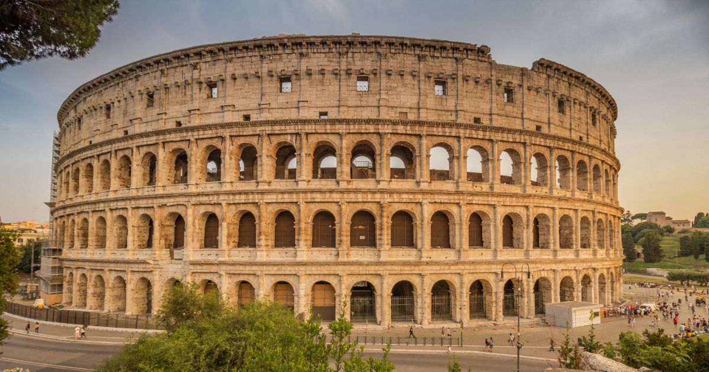

Rome - the Eternal City
Rome was called the “Eternal City” by the ancient Romans because they
believed
that no matter what happened in the rest of the world,
the city of Rome would
always remain standing. Exploring the city
centre by foot surrounded by glorious
monuments and colossal
remains takes you back in time to the glory that was
Rome.
Why Visit Rome?
With its unparalleled history, Rome is the 3rd most visited city in
Europe and the
14th worldwide. It attracts visitors from all over the world who come to
discover the
city's impressive monuments and archaeological sites; not to mention its
renowned cuisine and its lively atmosphere.
Walking through Rome is not just about touring an ancient city full
of
archaeological remains; Rome reminds us of gladiators fighting for life
and death
in the Colosseum, chariots racing in the Circus Maximus,
and the sight of Roman
sages strolling through the forum while discussing democracy.
With more than 16 million visitors a year, tourism in Rome is
unstoppable. It's the
3rd most visited city in Europe, behind
London and Paris, making it a high
contender for the most romantic city in Europe.
How to visit the Eternal City?
Is the eternal quality of Rome luring you in? Do you want to dive deep
into the different aspects
of the city that have made it into the
hall of fame for their timelessness?
Walks Inside Rome has cast a
wide net to provide an array of tours that cover architectural sites,
layered histories, Roman and Italian gastronomy, parks and villas of the
city, shopping, day trips
and much more. Signing up for a tour is the optimal way to discover the
city.
For information about tours available, you can send us
an email at info@walksinsiderome.com.
Looking for Accommodation?
At the following link, you'll find hotels of all categories with a
minimum price guarantee.
Discounts can be up to 75% and payment is made directly at the hotel.
Hotels in Rome - find the best deals!
Gallery

The Pantheon boasts the largest unsupported
concrete dome in the
world. Incredible, but true -
in the nearly 2,000 years since
the Pantheon was completed, no unreinforced concrete dome
anywhere in the world has ever been
built on such a
scale.

The Colosseum was once a site for gladiatorial duels, where gladiators
and wild animals battled each other for the entertainment of the
locals. Ancient Romans even received free entry to the events held
here, and it was the equivalent to watching a major sporting event
today.

The Trevi Fountain, built in the 1700s, is perhaps one of Rome's most
iconic structures. Erected on the site of an ancient Roman water
source, the fountain is made of the same material as the Colosseum
(travertine stone). The Trevi Fountain serves as a modern marvel that
links back to Rome's fabled past.